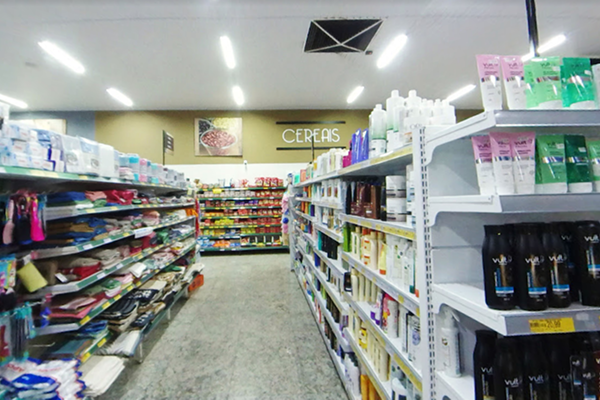

Ao longo das décadas, buscamos constantemente evoluir, adaptando-nos às necessidades de nossos clientes, mas sempre mantendo o compromisso com a excelência no atendimento. Acreditamos que um bom atendimento é fundamental, por isso nossa equipe é treinada para oferecer um serviço personalizado e eficiente, buscando atender às expectativas e necessidades de cada pessoa que visita nossa loja.
O Supermercado São Carlos, fundado em 10 de maio de 1979, é um verdadeiro marco em Buritama, São Paulo. Com mais de 40 anos de história, temos o orgulho de ser uma referência na cidade, oferecendo aos nossos clientes uma experiência de compras completa e satisfatória. Desde a nossa inauguração, nossa missão tem sido sempre a mesma: proporcionar produtos de qualidade com variedade e preços acessíveis, em um ambiente seguro e acolhedor.
O Supermercado São Carlos é muito mais do que um simples lugar para fazer compras; somos parte da comunidade e trabalhamos todos os dias para garantir que nossos clientes encontrem tudo o que precisam com qualidade e confiança. Estamos aqui para continuar sendo o seu supermercado de confiança, proporcionando a melhor experiência de compra para você e sua família.